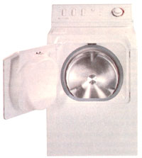
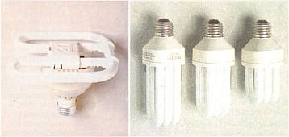
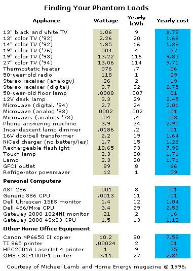

ENERGY & ENVIRONMENT
Invest your tax refund and realize a 100% annual return.
Insulation. Weather-stripping. Water-heater blankets. High efficiency lighting. Are you yawning yet? Day-to-day resource conservation is not nearly so glamorous as chaining oneself to a redwood tree or marching on Washington. Sure, we all know - intellectually - that conservation is what we really should do, just like we all know we really should read more classic literature, but, being mere mortals, we usually leave David Copperfield on the shelf and reach for the remote control. Here's a factoid to post on your refrigerator, complements of Amory Lovins of The Rocky Mountain Institute: "All the remote control televisions in the U.S., when turned to the "off" position, still use the equivalent in output of one Chernobyl-sized power plant."
In the energy business, we call that a phantom load - the power your house is consuming when no one is home and all your appliances appear to be off (appear being the operative word). Phantom load is just one of the culprits working to defeat energy conservation efforts (see the chart on page 26). The biggest culprit of all is human nature. We all care deeply about global warming, rapid depletion of natural resources, and toxic-waste production. But these issues seem so distant and enormous that we feel that our individual contributions can't have a meaningful impact. After all, when you chain yourself to a redwood tree, you see an immediate, if transitory, effect. It's hard to get the same exhilarating feeling of accomplishment when you buy a water-heater blanket. But you should.
Imagine for a moment that your Uncle Sam just gave you $2,000 to invest. Would you choose mutual funds? Certificates of deposit? Real estate? What if you found an investment that would net you a 100% annual return? How about a 300% return? Investing in simple, relatively inexpensive conservation measures will give you that kind of return, risk-free.
According to a revealing report by the American Council for an Energy Efficient Economy, investments in energy efficiency improvements to buildings in just three states, New York, New Jersey, and Pennsylvania, could save more than one hundred and fifty billion energy dollars, and reduce U.S. air pollution emissions by 24%. Here's another point to ponder: if every subscriber to MOTHER replaced their washing machine with a new water-conserving horizontal axis model, the annual water savings would be two billion gallons.
Retailing at around $500 more than conventional washers, these front-loading H-axis machines are one of the best conservation investments on the market. Before your heart stops at the prospect of spending that amount of money on such a simple appliance, consider the following. Instead of filling a tub of water and using an agitator to move clothing around, Haxis machines have an inner perforated drum that contains the laundry, and an outer drum that contains the wash water - as little as half the amount of water needed to fill a comparable vertical-axis washer. Clothes are lifted and fall into the wash water, efficiently cleansed and rinsed by water forced through the clothing fibers. Drying times are shorter because the drum spins upwards of 900 rpm, extracting most of the water from the load before it goes in the dryer. Water consumption is cut by 30% to 50%, and power to heat the water and to dry laundry is cut by 50% to 65%.
You don't need a calculator to figure out that the extra $500 you paid up front will be more than offset by dramatically reduced operating expenses. There are a number of H-axis models on the market, with various bells and whistles. The numbers to look for are the capacity (compare with your old one), water usage per load, and spin speed (the higher the rpm, the shorter the dryer time). Maytag's Neptune model is one of the best, with the largest capacity of any residential machine and an 800 rpm spin speed.
The second best conservation investment you can make is high-efficiency, compact fluorescent lighting. If the words "fluorescent lighting" make you wince, you should know that the industry has come a long, long way since the flickering blue glare of a 70s era hospital waiting room. The new breed of compact fluores cents (CFLs) have the same pleasant color spectrum as incandescent bulbs, no noticeable flicker, and still save you about $64 per year, per bulb - even after accounting for the added up-front expense of a pricier bulb. You don't need those ugly four-foot long tube fixtures, either. CFLs screw into your existing lamps just like incandes cents, and if you're in the market for hard-wired CFL fixtures, hundreds of decorator styles are available - there are even CFL torchieres that are safer and more energy-efficient than halogens. Changing light bulbs isn't as glamorous as saving baby seals, but the impact is just as real, measurable in fossil fuels not burned and energy dollars not spent.
No discussion of conservation is complete without a nod to the humble low-flow showerhead. Reduced water consumption - and the commensurate reduction in water heating costs - is astonishing on the national level, precisely because so many people take showers. If you already have a low-flow showerhead, give yourself a pat on the back. Then ask what else you can do to reduce the power we consume to heat our water. A simple insulating blanket on the water heater is old news, but you'd be surprised how many of us overlook this inexpensive precaution. The newest innovation in water heating has us tech-types dancing in the streets, even though it's not as generally applicable as our first two conservation picks.
It's called a heat exchanger, and works on the most basic thermodynamic principle. Left to its own devices, air or water temperature will equalize: heat moves from a hot medium to a cold medium until both reach equilibrium. What if you could capture the heat in the hot water that goes down your drain when you shower, and use that recovered waste-heat to pre-heat the water going into your water heater? Since the incoming water would be warmer to begin with, your water heater wouldn't have to work as hard - or consume as much fuel. Like most strokes of genius, the heat exchanger is eloquently simple, both in concept and implementation.
The GFX Waste Heat Recovery System, retailing for around $200, consists of a tight coil of copper tubing wrapped around a copper drain pipe. Hot shower-water careens down the drain pipe, transferring its heat to fresh cold water flowing through the coils and into your water heater. That's it. No moving parts, no power draw, no storage tank. This beauty could conceivably cut your water heating costs by 30% to 60%. If you have an electric water heater, you'll recoup your investment in a matter of months. One drawback with this system is that there has to be enough room under the floor to create the vertical drop that causes the hot water to cling to the walls of the drain pipe and effect heat transfer. Another is that it only works when the drain and supply lines are flowing simultaneously. Even with these limitations, the energy savings are staggering. The GFX could well be the greatest conservation product since the low-flow showerhead.
Finally, and you knew we'd get around to this sooner or later, insulate! We all know what insulation does, and how it reduces our heating and cooling bills. But be honest, have you ever actually looked in your attic, under your floors, or inside the walls to see what's there? Thought so. Most American homes are woefully under-insulated. In most of the U.S., exterior walls should have an R-value of 19. If you like the feel of fiberglass in your shirt, you can dive right in and insulate wall cavities yourself. If not, you'd be wise to hire a pro, who has all the spiffy tools needed to reach around corners and between walls.
If your home was built before 1950, chances are attic and underfloor insulation were completely ignored. Both are easy to install on your own. You'll want a minimum of R-11 under floors and R-30 in the attic.
The newest insulation wrinkle uses a thin aluminum film to stop radiant heat flow (the heat flow through space). It's different from traditional insulation, which slows conduction (the heat flow through an object), and it has a more specific application. A radiant barrier works best when heat is trying to transfer downward, from the underside of your roof into your attic, for example. The Florida Solar Energy Center reports that installing a radiant barrier on the underside of the roof will reduce home cooling costs by 10% to 20%. Radiant barriers are not for everyone; the technology is most effective in regions where summer cooling is the biggest energy expense. Where winter heating is more of an issue, insulation and weatherization (plugging air leaks) will give you a 25% to 40% reduction in heating and cooling costs every year.
One of the most imposing obstacles to living more efficiently is the fact that we are surrounded by utility power. Designing off the power grid means very quickly learning to squeeze the maximum work out of every single watt. There's no better motivation for conservation efforts than living without resource abundance. On the grid, we tend to ignore our consumption patterns: with auto-deduct payment plans, you never even have to open the utility bill. If we're going to make that collective leap from intellectualizing about energy issues to taking action, we need to open the bill, and start changing the future - one light bulb at a time.
|
 PHOTOS: COURTESY OF REAL GOODS TRADING CORP Maytag's Neptune |
 Left: A 38W compact fluorescent bulb with a 10,000-hour life equals an incandescent bulb of 150W. Right: 25W, 20W and 15W compact fluorescent bulbs. |
 |